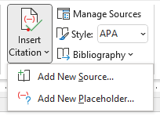

Word processors include tools that simplify the process of adding documentation citations to your writing. The specifics of how these tools work depend upon the software you are using. You can use these sources to find help:
From LinkedIn Learning:
The series “Research and Create Citations” (21m 50s) explains Microsoft Word’s built-in tools for managing your citations and bibliography. The series includes these videos: